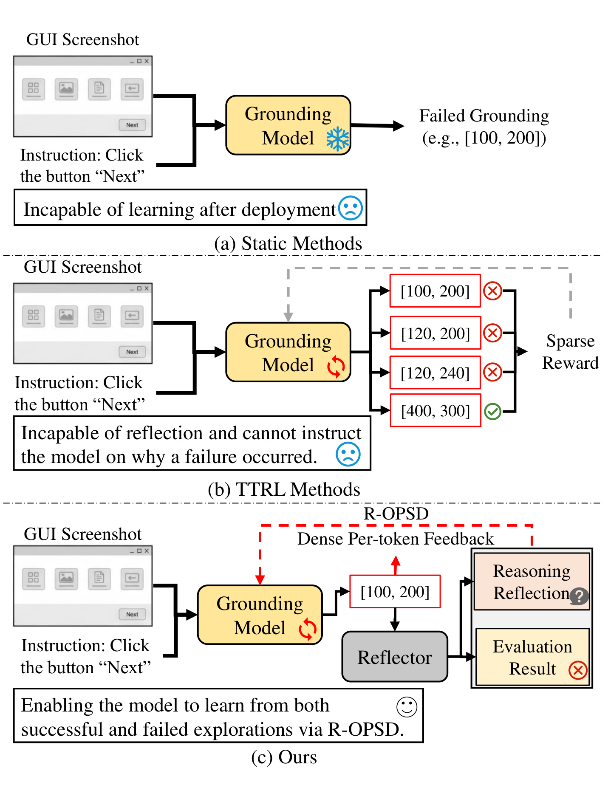
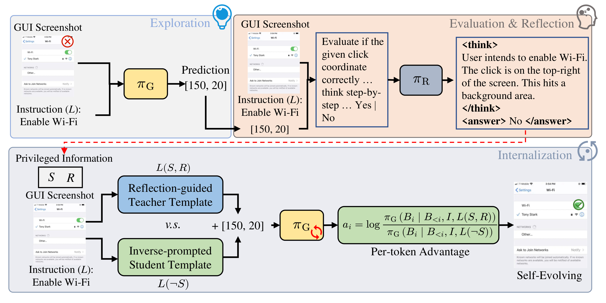
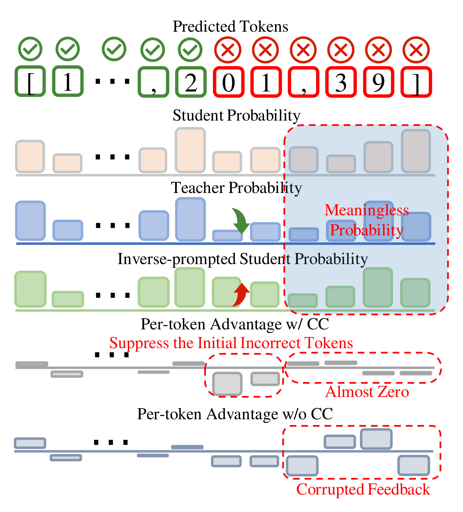
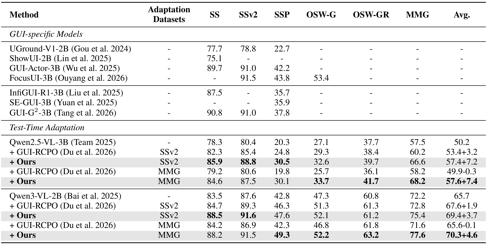
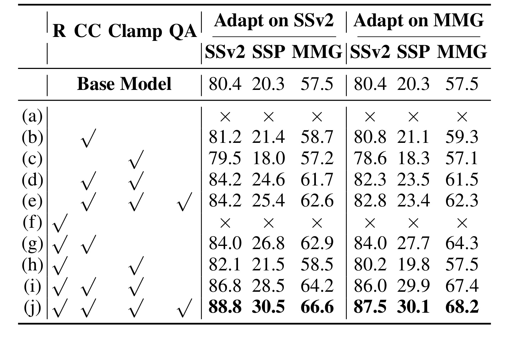
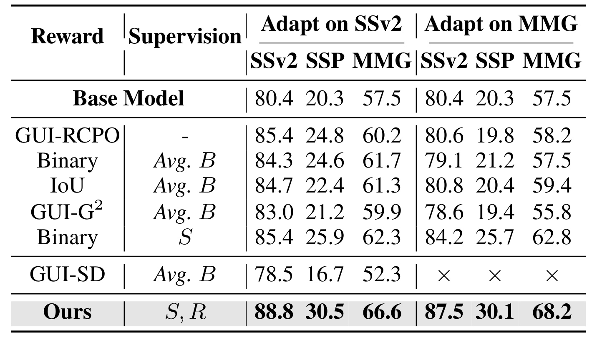
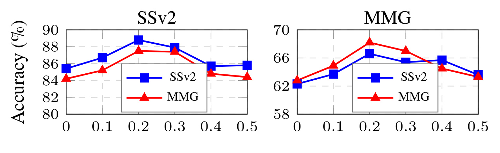
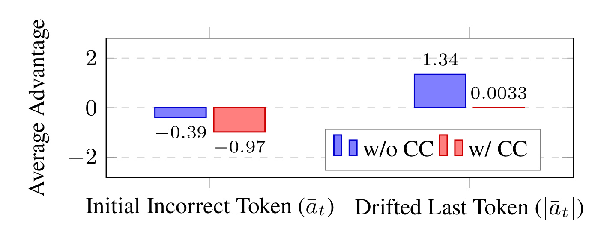
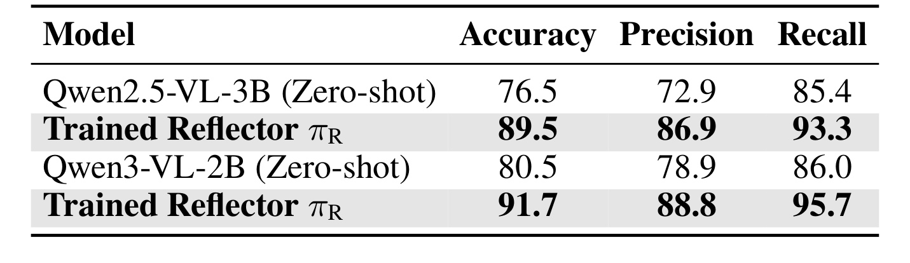
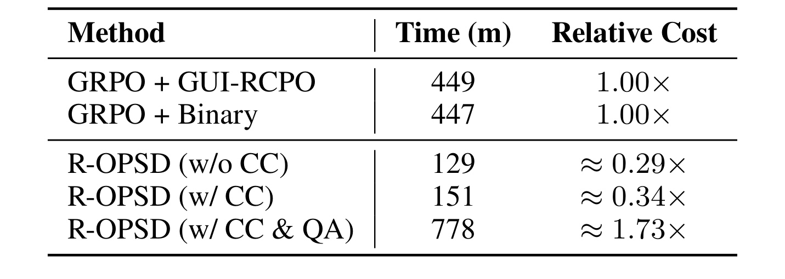

R-OPSD：让 GUI 视觉定位模型在测试时从失败反思中继续学习
《Test-Time Self-Evolving GUI Visual Grounding via Reflection-Guided On-Policy Self-Distillation》由南京理工大学计算机科学与工程学院的 Shiyu Xuan 与 Zechao Li 完成，一作主机构为南京理工大学。论文于 2026 年 8 月 11 日提交，研究对象是 GUI Agent 的视觉定位：模型接收界面截图和自然语言指令，输出应点击元素的中心坐标或边界框。论文提出 R-OPSD，把探索、结果评估、失败反思和参数更新接成部署后的闭环；唯一论文入口为 arXiv:2608.11191。arXiv 页面写明代码将发布，但截至本次核验尚未给出独立代码仓库，因而实现细节和复现实验仍需等待。
现有 GUI 定位模型部署后通常冻结参数，面对陌生界面无法从交互经验继续改进；即使测试时强化学习能给出成败奖励，稀疏标量也说不清一次点击为什么失败，更无法把文字反思直接写回模型权重。
1. 背景和问题
GUI Visual Grounding 是 GUI Agent 真正执行动作之前的基础环节。用户说“打开图库”“启用 Wi-Fi”或“查看附件”，模型需要先把语言意图对齐到截图中的具体元素，再产生中心点或边界框坐标。定位错一个像素区域，后续规划再正确也可能点击背景、相邻按钮或危险控件。监督微调、专用 action head、强化学习和粗到细缩放等路线已持续提高离线基准成绩，但它们大多把部署视为训练结束：参数离线定型，遇到新应用、改版页面或不同视觉风格时只能重复犯错。对需要跨网站、跨系统工作的 Agent 来说，这种“训练时会学、上线后失忆”的边界尤其明显。
测试时强化学习试图把部署阶段重新变成学习阶段。一个典型做法是在同一截图与指令上采样多组坐标，以点击是否落入目标框为奖励，再用组内相对优势更新策略。这比完全静态的模型多了一条反馈通路，但奖励通常只有成功或失败两个值。若八次探索都点错，组内没有相对差异，优化器得不到“哪一步更接近正确”的方向；若若干预测集中在视觉相似但错误的控件上，平均坐标还可能落到无意义区域。更关键的是，标量只回答“错了”，不能说明用户想点什么、当前坐标落在何处、二者为何不匹配，以及下一次应把注意力移向哪里。
论文把“反思”定义为比成败标签更丰富的特权信息。Reflector 同时观察截图、指令和预测坐标，先解析意图，再检查该坐标对应的视觉元素，最后输出二元判断与逐步诊断。成功样本的反思确认点击与目标一致；失败样本的反思会指出它落在背景、错误图标或空白区域。难点在于，普通强化学习只能消费标量奖励，不能直接把自然语言诊断变成自回归坐标 token 的训练信号。R-OPSD 的研究问题因此不是简单地“再加一个评判模型”，而是：怎样让一个已经部署的 grounding policy 在无人工真值时，把自身探索生成的文字反思内化到权重，同时避免错误坐标前缀继续污染后续 token 的教师反馈。

Figure 1 用同一条“点击 Next 按钮”的指令对比三种部署范式。上半部的静态模型只产生一次失败坐标，交互结束后参数不动；中间的 TTRL 能多次采样并得到稀疏奖励，但多个坐标只有对错，没有失败原因，因此很难在全错组中形成方向。底部的 R-OPSD 在 policy 之外增加 Reflector：预测坐标连同截图和指令进入评估器，返回 evaluation result 与 reasoning reflection，再转成逐 token 稠密反馈。图中最重要的差异不是多做了一次推理，而是反馈粒度从 query 级的一个数变成坐标序列每个 token 的优势，并最终作用于模型参数。这个闭环让成功和失败探索都可能贡献学习信号，但也把系统安全性绑定到了 Reflector 的可靠性：如果诊断错了，稠密监督会比一个错误标量影响更多更新位置。
该问题与大模型 Agent 的关系超过单一 GUI 基准。工具调用模型上线后同样会面对训练分布之外的页面结构、API 返回和任务组合；仅把失败日志追加到上下文，知识不会稳定进入权重，而直接在线更新又可能引发灾难性遗忘或错误自强化。R-OPSD 提供了一种“先以自然语言解释失败，再用条件自教师把解释压回参数”的路线。它的价值在于把 reflection 从提示工程提升为优化信号，同时清楚暴露出新的治理问题：谁来评估评估器、更新作用范围多大、何时回滚、跨任务累积是否安全。论文的六个基准能验证视觉定位适应，却还不能回答长链 Agent 在真实账户和高风险操作中的全部问题。
2. 方法
2.1 探索—评估—反思—内化闭环与 Reflector
给定截图 $I$ 与语言指令 $L$，grounding policy $\pi_G$ 生成坐标 $B$，它可以是边界框 $[x_1,y_1,x_2,y_2]$，也可以是中心点 $(x,y)$。每个测试时 episode 依次执行四步：policy 在陌生界面探索；Reflector 评估坐标是否完成指令；Reflector 用文字解释判断依据；R-OPSD 将判断与反思内化到 $\pi_G$。Reflector 的接口由式（1）定义：
符号解释：$\pi_R$ 是多模态 Reflector，$I$、$L$、$B$ 分别为截图、指令和 policy 的坐标预测；$S\in\{0,1\}$ 表示失败或成功，$R$ 是包含意图解析、坐标落点检查、匹配验证和结论的推理反思。这里的 $S,R$ 是测试时自蒸馏的特权信息，不是人工标注；它们既决定更新方向，也改变自教师看到的条件，因此评估器误判会同时影响“学不学”和“学什么”。
Reflector 不是在测试集真值上临时训练。作者先用 GroundCUA Functional Split 构建约 10,160 条平衡样本：每个指令—截图对以温度 1.0 采样八个坐标，只保留既有正确又有错误预测的组，再各抽一个正例和负例。训练采用 GRPO，并把格式奖励与二元正确性奖励相加；二元部分可写为式（2）：
符号解释：$S^*$ 是由预测点是否落入真实目标框得到的离线标签，$S$ 是 Reflector 输出；格式奖励另行约束 think/answer 标签和最终 Yes/No。训练完成后 $\pi_R$ 在测试时冻结，只有 grounding policy 更新。policy 与 Reflector 共享 Qwen2.5-VL 或 Qwen3-VL 基座，通过切换两组 LoRA adapter 扮演不同角色，减少同时驻留两个完整多模态模型的显存，但每次更新仍需额外的 Reflector和条件前向。

Figure 2 从左到右画出信息流。上路以截图与“启用 Wi-Fi”为输入，$\pi_G$ 探索出 $[150,20]$；右上 Reflector 发现点击落在背景，生成 $S=0$ 和解释 $R$。下路把 $S,R$ 作为 privileged information 放进 reflection-guided teacher prompt，同时用 inverse-prompted student 构成对照，两者都对 policy 自己采样出的坐标 token 计算概率，概率比形成 per-token advantage，随后更新 LoRA 后的 $\pi_G$。图中“同一个基座、切换角色”意味着教师并非永久更大的外部模型，而是同一模型在不同条件下的自教师：知识增量主要来自反思条件，而不是参数规模差。训练时需要 Reflector、教师和逆向学生多次前向；完成当前适应后，普通坐标推理只使用已经更新的 grounding adapter。
2.2 R-OPSD：把文字反思变成逐 token 优势
R-OPSD 先从标准 On-Policy Distillation 出发。policy 自己采样坐标序列 $B\sim\pi_G(\cdot\mid I,L)$，教师不生成另一条“正确答案”替换它，而是在相同前缀上评价实际采到的每个 token。标准 token 优势为式（3），优化目标为式（4）：
符号解释：$B_i$ 是第 $i$ 个坐标 token，$B_{<i}$ 是其自回归前缀，$\pi_T$ 与 $\pi_G$ 分别给出教师和学生对“已经被采样 token”的概率。$a_i>0$ 表示教师比学生更认可该 token，应提高其概率；$a_i<0$ 表示应压低。由于轨迹来自当前 policy，这是真正的 on-policy 监督，能覆盖模型部署时实际访问的错误状态，而非只模仿离线教师答案。
符号解释：$T$ 是坐标序列长度，$\operatorname{sg}$ 表示 stop-gradient，保证优势只作为权重而不沿教师概率比反传；负号使最小化损失等价于按优势提高或降低 token 概率。该目标的关键不是普通蒸馏中的全分布拟合，而是把教师—学生概率差变成逐位置 policy gradient。边界也很清楚：如果教师在错误前缀上给出的条件分布失真，$a_i$ 会把噪声直接传给后续 token。
R-OPSD 的核心改动，是不用更大教师，而让同一个 $\pi_G$ 在额外看到 Reflector 的 $S,R$ 后成为 conditioned self-teacher。成功时 prompt 告诉教师该预测已验证正确；失败时 prompt 同时给出原错误坐标和诊断反思，请它基于反馈重新定位。于是式（5）变成：
符号解释：分子与分母共享模型参数，差别是分子还看到评价与反思条件 $L(S,R)$；二者都评价原 on-policy token $B_i$。文字反思不需要被翻译成手工规则，只要它能让条件模型对坐标序列形成更有信息的概率分布，概率比就会把高层解释投影为稠密监督。成功反思强化已有正确轨迹，失败反思则可能压低错误 token；但它仍受制于自回归前缀，一旦最早坐标位错误，后续教师与学生都被迫在不可靠历史上继续条件化。
2.3 Contrastive Calibration：阻断错误前缀污染
坐标是自回归生成的。例如序列中表示某个横坐标的首位 token 已错，后续数字和分隔符都在错误前缀下产生。若只用式（5），reflection-guided teacher 虽知道目标位置，却仍要评价错误轨迹后半段；随着错误累积，这些位置的概率含义越来越弱。作者为失败样本构造 inverse prompt $L(\neg S)$，故意告诉同一个 policy“此前预测是正确的”，让它对当前错误轨迹更自信，再与看到真实失败反思的条件教师对比，得到式（6）：
符号解释：$L(\neg S)$ 不是新的标签，而是只在 $S=0$ 时使用的反事实提示。首个错误 token 之前的前缀仍正确，逆向学生因被告知“成功”而高估错误 token，反思教师则倾向真正目标，故分子小于分母、$a_i<0$，产生明确抑制。到序列末尾，两个模型都被同一长错误前缀主导，分布趋同、概率比趋近 1，优势趋近 0；这有意放弃对已漂移后缀的学习，避免把无意义差异写入权重。

Figure 3 把该机制拆成“第一处错误”和“后续漂移”两段。顶部坐标 token 从首个红叉开始偏离，普通学生、reflection-guided teacher 与 inverse-prompted student 分别给出灰、蓝、绿三组概率。在首错位置，蓝色教师根据反思降低错误 token 概率，绿色逆向学生因成功提示而提高概率，差值形成红色负优势；这正是模型应学会的纠错位置。随着错误前缀扩大，蓝绿分布都被相同历史约束，CC 下的优势带逐渐变成近零。图底的无 CC 路线仍在漂移 token 上产生大幅正负更新，论文称其为 corrupted feedback。CC 的安全含义不是保证教师正确，而是把不可靠更新的影响范围限制在“尚有可解释条件”的前缀附近。
2.4 方向裁剪与 query-level 优势融合
即便条件概率比合理，token 优势方向也可能与整个轨迹的成败冲突。作者用 Reflector 的 $S$ 做 direction-based clamping：成功样本只保留正优势，失败样本只保留负优势，如式（7）。这样不会因为某个局部概率差而压低已验证成功的坐标，也不会提高失败轨迹的 token 概率。
符号解释：$a_i$ 是 R-OPSD 或 CC 产生的原始逐 token 优势，$S$ 提供 query 级方向约束。裁剪会牺牲一部分细粒度信号，例如失败轨迹中偶然正确的 token 也不能被正向强化；作者选择一致性而非完全保留概率比，以降低在线更新的震荡。该规则只在参数适应时使用，不改变适应后坐标解码形式。
完整框架还可与 GRPO 的组内 query 优势相加。对同一查询采样 $K$ 条轨迹，以格式奖励和 Reflector 正确性评价构成 $r_{\mathrm{GRPO}}$，再标准化为式（8）：
符号解释：$k$ 是组内第 $k$ 条 rollout，$K=8$ 是论文完整配置使用的组大小；分子减去组均值、分母除以组标准差，使相对成功轨迹得到正优势。它仍会在全错组失效，因此不能替代 R-OPSD；作用是补充 query 级排序，让不同 rollout 之间的相对质量进入更新。
符号解释：式（9）把 query-level 的 $\hat A_{\mathrm{GRPO}}[k]$ 与 token-level 的 $a_i$ 合并，$\lambda$ 控制反思蒸馏强度，论文主配置取 0.2。前者回答“这条轨迹相对同组怎样”，后者回答“这条轨迹的哪个 token 应升或降”。两者互补也带来成本：只做 R-OPSD 可单轨迹更新，加入 query advantage 又需要 $K=8$ 采样，训练时间显著增加。
3. 实验结果
3.1 六个基准、两种基座与主结果
实验采用 ScreenSpot、ScreenSpot-v2（SSv2）、ScreenSpot-Pro（SSP）、MMBench-GUI（MMG）、OSWorld-G（OSW-G）和 OSWorld-G-Refine（OSW-GR）六个截图定位基准，覆盖移动端、桌面端、网页与更复杂的专业界面。统一指标是 Element Accuracy：预测点落入目标元素的真实边界框即记为正确。测试时适应只使用 SSv2 或 MMG 的截图与指令，明确不读取这两个集合的真值。主要基座为 Qwen2.5-VL-3B 和 Qwen3-VL-2B；rollout 温度 1.0、top-p 0.95，Reflector 训练一轮，grounding adapter 训练两轮，学习率均为 $10^{-4}$。

Table 1 要按“基座—适应数据—六个测试集—平均值”四层读。Qwen2.5-VL-3B 未适应时平均准确率为 50.2；在 SSv2 上自进化后，GUI-RCPO 达到 53.4，而本文方法达到 57.4，即相对基座增加 7.2 个百分点。换成更复杂的 MMG 做适应数据，GUI-RCPO 平均值降到 49.9，出现 -0.3 的负迁移；R-OPSD 却达到 57.6，为表中最大的 +7.4。逐列看，MMG 适应后的 R-OPSD 在 SSP 上由 20.3 提到 30.1，在 MMG 上由 57.5 提到 68.2，说明失败反思不仅记住适应集，还向不同界面难度迁移。Qwen3-VL-2B 的静态均值已达 65.7，R-OPSD 仍分别提高到 69.4 和 70.3；增幅收窄但没有消失。证据支持“在六个离线定位集上稳定改进”，却不能直接外推为长链 Agent 在线成功率。
值得注意的是，论文摘要里的“平均提高 7.4%”在表格语境中更准确地应读为最高配置相对基座增加 7.4 个准确率百分点，而不是相对百分比增长。R-OPSD 相对 GUI-RCPO 的优势也依赖具体适应和评估组合，不能概括为每个单元都提高 7.7。强基座上的平均提升为 3.7 与 4.6 个百分点，说明方法收益部分来自补足较弱模型对陌生界面的适应能力。另一方面，ScreenSpot-Pro 的绝对准确率仍低，3B 模型最佳约 30，复杂控件并没有因自进化而被“解决”。
3.2 组件消融：反思有信息，CC 才让失败轨迹可学

Table 2 的 R、CC、Clamp、QA 分别代表文字反思、Contrastive Calibration、方向裁剪和 query-level advantage。最朴素的配置（a）只把二元评价当作特权信息做 OPSD，六个位置全部标记策略崩塌；（b）仅使用 query advantage 能小幅提升，却仍受稀疏奖励限制。比较（d）与（e），加入 Reflection 后，SSv2 适应时 SSP 从 24.6 升到 25.4、MMG 从 61.7 升到 62.6，反思确实提供额外信息。但（f）把反思直接用于 token 反馈而没有 CC，再次全线崩塌，说明“有诊断”不等于“诊断概率在错误前缀上可信”。加入 CC 的（g）在 MMG 适应下达到 64.3，扭转负迁移；进一步加 Clamp 的（i）达到 67.4，完整（j）再升至 68.2。消融链条与方法假设一致：Reflection 决定信息量，CC 限制错误后缀，Clamp 保证成败方向，QA 补充组间相对质量。

Table 3 把“是不是普通 RL 也能做到”拆得更清楚。GUI-RCPO、Binary/Avg. B、IoU/Avg. B 与 GUI-G2/Avg. B 都用聚合框或标量来监督，复杂 MMG 适应下容易退化；例如 Binary/Avg. B 在 MMG 上只有 57.5，GUI-G2/Avg. B 为 55.8。仅以 Reflector 二元 $S$ 驱动 GRPO 能到 62.8，证明评估器比平均伪框更可靠，但仍低于 R-OPSD 的 68.2。GUI-SD 把平均框画回图片作为视觉特权信息，在 SSv2 适应时 MMG 只有 52.3，MMG 适应配置甚至崩塌；错误可视框会直接污染视觉上下文。本文的 $S,R$ 组合达到两组设置的最高值，支持“收益来自可解释反思转成 token 监督”这一判断，而非单纯增加 rollout 或换一种标量奖励。
3.3 优势形状与混合系数

Figure 5 分别以 SSv2 和 MMG 为评估集，蓝线、红线表示在 SSv2 或 MMG 上适应。四条曲线都从 $\lambda=0$ 向 0.2 上升，并在 0.2 左右达到峰值；继续增大到 0.3—0.5 后回落。这个形状说明 token 反思优势不是越强越好：$\lambda=0$ 退化为 query-level GRPO，无法充分使用文字诊断；过大则让条件自教师的局部概率差压过组级成功信号，Reflector 噪声和错误前缀风险都会被放大。作者据此固定 $\lambda=0.2$。两种适应集上的相近峰值给出一定稳健性，但只扫了单一系数网格，没有报告不同 Reflector 误差率、学习率或更新轮数下最优值是否移动。两幅图的纵轴范围不同，读者应比较各自峰形而非直接比较折线的视觉高度。

Figure 4 是对 CC 作用方式的直接测量。无 CC 时，首个错误 token 的平均优势只有 -0.39，惩罚较弱；漂移末 token 的平均绝对优势却高达 1.34，意味着优化器把更大更新施加在已经失去语义的后缀上。加入 CC 后，首错优势变为 -0.97，模型更明确地压低真正的分岔点；末端绝对优势降到 0.0033，几乎不更新。它与 Figure 3 的理论叙事吻合，比只看最终 accuracy 更有说服力。不过图中只汇总两个位置和均值，没有给优势分布、方差、坐标长度分层或 Reflector 判断错误时的曲线，因此只能说明平均机制按预期工作，不能证明每条失败轨迹都安全。工程复现时应额外保存逐位置直方图，检查接近零的均值是否由正负大值相互抵消。
3.4 Reflector 可靠性与定性案例

Table 4 在从 SSv2、SSP 和 MMG 平衡抽取的 1,000 条预测上评估二元判断。Qwen2.5-VL-3B 零样本 Reflector 的准确率为 76.5，训练后升到 89.5，精确率 86.9、召回率 93.3；Qwen3-VL-2B 从 80.5 升到 91.7，精确率 88.8、召回率 95.7。高召回意味着大部分真实成功点击不会被漏判，但精确率较低也表示一部分失败点击可能被误认成成功。由于 $S$ 参与方向裁剪，假阳性会强化本应抑制的轨迹；$R$ 又进入条件教师，错误理由可能进一步影响多个 token。因而 89.5—91.7 的准确率足以支持平均增益，却远未达到可忽略误差的程度，部署时需要更新阈值、回滚和独立监控。平衡测试集也不能代表真实流量中的成功率先验，线上精确率可能随基率明显变化。
11.jpg 是 Figure 6(a) 中第一个成功案例的对象级细节：指令要求“向桌面添加新应用”，截图处于应用图标编辑界面，预测框落在左上角带加号的控件上。这个局部证据说明 Reflector 接受坐标时不只识别“桌面”场景，还需要把 add intent 对齐到视觉上的 plus control。论文原始 Figure 6 还包含“打开图库”的成功案例，以及“添加工具栏快捷方式”“查看附件”的两个失败案例；对应反思分别确认 Gallery 菜单项，或指出坐标落在普通顶部图标和邮件正文而非目标入口。与一个二元标签相比，这些诊断提供了意图、坐标落点和不匹配原因。风险是推理多次依赖“通常对应”的界面先验，若布局反常、控件遮挡或坐标缩放不一致，解释可能连贯却错误；论文没有展示 Reflector 自身判断失败的定性案例。
3.5 时间成本、规模扩展与表示选择

Table 5 使用 Qwen2.5-VL-3B、4 张 A100 40GB 比较适应时间。标准 GRPO+GUI-RCPO 需要 449 分钟，GRPO+Binary 为 447 分钟，主要成本来自每个 query 采样 $K=8$ 条轨迹。R-OPSD 不含 CC 时只采一条轨迹，虽需条件教师前向，仍只用 129 分钟；加入 inverse-prompted student 后为 151 分钟，约是 GRPO 的 0.34 倍。完整配置再引入 query advantage，重新回到八轨迹组采样，时间跃升到 778 分钟、相对成本 1.73 倍。由此应区分“核心 token 自蒸馏很省”和“论文最高精度配置很省”：前者成立，后者不成立。共享基座与 LoRA 把 3B/2B 显存控制在约 10GB、7B/8B 约 30GB，但额外延迟、持续更新存储和版本回滚仍未计入。
附录的 Table 6 说明规模扩大后收益仍存在：Qwen2.5-VL-7B 在 MMG 适应后，MMG 准确率由 68.2 升到 79.2，优于 GUI-RCPO 的 70.9；Qwen3-VL-8B 的提升较小但保持正向。Table 7 与 Table 8 则显示，把坐标画成红框作为视觉 prompt 会明显退化：训练后 Reflector 使用文本坐标可达 91.7 accuracy，视觉框版本仅 78.3；R-OPSD 的视觉提示版本也在多列低于基座，说明错误伪框会污染视觉编码。Table 9 把方法移到 GUI-R1 约 3,000 条无标注训练样本上，三个测试集均提升，提示 R-OPSD 也可作无监督训练算法。不过这些扩展仍是离线 benchmark，未测连续多天适应、跨应用顺序效应、遗忘和高风险动作拦截。
4. 总结
4.1 我的判断
R-OPSD 最有价值的贡献，是把 GUI Agent 的“反思”从一次性上下文提示转成可优化的逐 token 信号，并正面处理 on-policy 自蒸馏在错误自回归前缀上的失真。论文的证据链相对完整：Table 1 给出六基准增益，Table 2/3 排除仅靠标量奖励或视觉伪框的解释，Figure 4 验证 CC 确实把更新集中到首错 token，Table 4 审计 Reflector 可靠性，Table 5 量化精度与成本的取舍。结论应限定为“无真值截图定位上的测试时适应有效”，而不是已经获得可长期自主进化的通用 GUI Agent。
对工程系统的直接启发有三点。第一，反思可以作为 privileged condition，而不必先被手工解析成规则标签；教师—学生概率比完成从自然语言到梯度的桥接。第二，在线学习不能只验证最终指标，还要观察优势在序列位置上的形状，首错与漂移后缀应采用不同信任度。第三，最高精度配置与最低成本配置不是同一个产品点：R-OPSD+CC 适合资源受限试验，叠加 query advantage 前必须评估八倍采样、延迟和回滚收益。
4.2 局限与后续跟进
局限至少包括四类。其一，Reflector 的 89.5—91.7% 准确率意味着伪监督并不干净，错误 $S$ 会翻转裁剪方向，错误 $R$ 会污染条件教师；论文没有给按置信度拒绝更新的策略。其二，六个核心任务都是离线截图定位，缺少真实动作执行、页面状态变化和长链任务中的安全验证。其三，测试时参数更新可能造成跨应用遗忘、顺序敏感和用户间数据泄漏，实验没有报告连续 episode 的保留曲线。其四，代码尚未发布，Reflector 数据构造、prompt 细节、优化稳定技巧和回滚策略暂时不能独立复核。其五，完整配置训练时间达到 778 分钟，不能直接视为每个线上请求都可承受的即时适应。
后续应优先做三组检查。第一，代码发布后复现 Table 2 的崩塌行与 Figure 4 的优势分布，特别记录均值之外的方差、异常轨迹和 Reflector 误判子集，因为这些决定 CC 是否真的限制风险。第二，把适应过程改为可回滚 LoRA 分支，设置置信度门槛与保留集守护，每次在线更新同时测当前应用收益和旧应用退化，才能观察灾难性遗忘。第三，在 OSWorld 等可执行环境中加入多步任务、危险控件和界面动态变化，对比“只在上下文保留反思”“R-OPSD+CC”“完整 QA 配置”的任务成功率、延迟和安全违规率。第四，继续跟踪代码、Reflector 数据集与更大模型实验是否按 arXiv 承诺公开，并核验文字坐标相对视觉框的优势能否跨分辨率和坐标归一化方式保持。